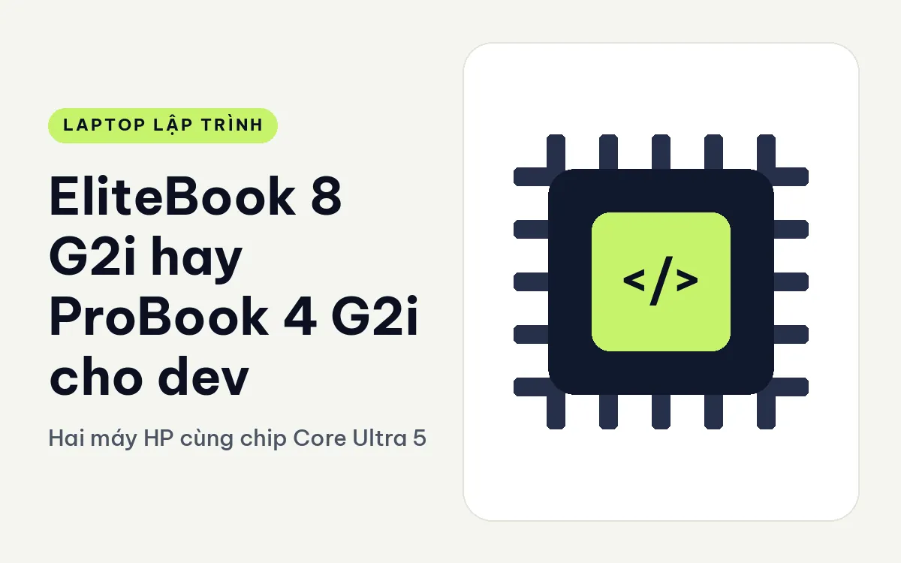
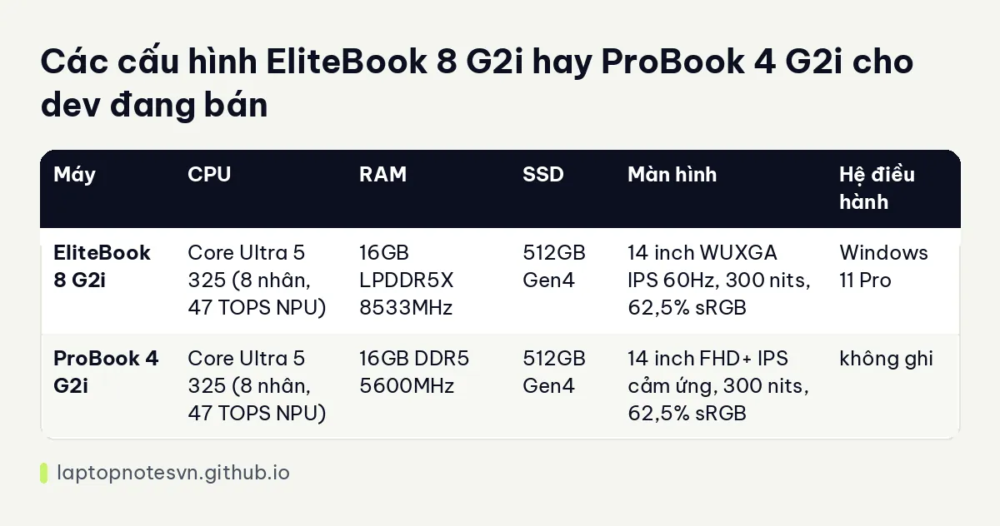

EliteBook 8 G2i hay ProBook 4 G2i cho dev - Hai máy HP cùng chip Core Ultra 5

HP bán hai dòng 14 inch gần nhau: EliteBook là cao cấp doanh nghiệp, ProBook là phổ thông doanh nghiệp. Điều thú vị là hai bản trong danh mục lại cùng dùng chip Core Ultra 5 325 với 16GB RAM và 512GB SSD. Vậy khác nhau ở đâu? Câu trả lời nằm ở thân máy, màn hình và cổng, tức là những thứ bạn chạm vào mỗi ngày.
Máy cao cấp hơn là HP EliteBook 8 G2i 14.
Máy phổ thông hơn là HP ProBook 4 G2i 14 AI.
Mang đi làm thì máy nào gọn hơn
EliteBook 8 G2i nặng 1,4 kg, dày 11,75 mm, pin 62Wh, vỏ nhôm, có 1 khe M.2, cổng Thunderbolt 4 và HDMI 2.1. ProBook 4 G2i có 2 cổng USB-A 5Gbps và HDMI 2.1; dữ liệu không ghi cân nặng, độ dày hay dung lượng pin, nên bài này không đưa con số cho ProBook ở phần thân máy.
Với EliteBook, độ dày 11,75 mm thuộc nhóm mỏng, trong khi vỏ nhôm cho cảm giác cứng cáp. Cổng Thunderbolt 4 cho phép nối màn hình ngoài, dock hoặc ổ SSD ngoài nhanh. ProBook thì thiếu thông tin này trong dữ liệu, nên nếu bạn cần Thunderbolt hãy hỏi cửa hàng trước.
Cấu hình EliteBook 8 G2i so với ProBook 4 G2i
| Máy | CPU | RAM | SSD | Màn hình | Hệ điều hành |
|---|---|---|---|---|---|
| EliteBook 8 G2i | Core Ultra 5 325 (8 nhân, 47 TOPS NPU) | 16GB LPDDR5X 8533MHz | 512GB Gen4 | 14 inch WUXGA IPS 60Hz, 300 nits, 62,5% sRGB | Windows 11 Pro |
| ProBook 4 G2i | Core Ultra 5 325 (8 nhân, 47 TOPS NPU) | 16GB DDR5 5600MHz | 512GB Gen4 | 14 inch FHD+ IPS cảm ứng, 300 nits, 62,5% sRGB | không ghi |
Chip và độ sáng màn giống hệt nhau, thậm chí cùng độ phủ 62,5% sRGB. Điểm khác là loại RAM: EliteBook dùng LPDDR5X tốc độ 8533MHz, ProBook dùng DDR5 5600MHz. RAM nhanh hơn giúp ích khi chạy đồ họa tích hợp hoặc tác vụ nặng bộ nhớ, nhưng với phần lớn việc code, bạn khó cảm nhận chênh lệch.

Khác biệt nữa là cảm ứng: ProBook có màn cảm ứng đa điểm, EliteBook thì dữ liệu không ghi cảm ứng. Hãy xem lại cách tính dung lượng ở bài lập trình viên cần bao nhiêu RAM: cả hai đều 16GB nên ngang nhau về mặt này.
Web, mobile hay backend thì nghiêng về máy nào
- Web, Node.js, Python, script: cả hai đều đáp ứng, chip 8 nhân là đủ.
- Backend với container: 16GB chật nếu chạy nhiều service, cả hai như nhau.
- Dev cần dock, màn ngoài qua USB-C: EliteBook với Thunderbolt 4.
- Dev thích thao tác chạm: ProBook với màn cảm ứng.
- Dev cần Windows Pro cho quản lý domain: EliteBook kèm sẵn Windows 11 Pro.
Vấn đề chọn theo nơi dùng
Máy đặt trên bàn cố định thì độ mỏng ít quan trọng, và ProBook làm đủ việc. Máy mang đi mỗi ngày thì mỗi trăm gam đều có giá trị, và EliteBook nhẹ, mỏng, vỏ nhôm có thể thuyết phục hơn. Đáng tiếc là dữ liệu ProBook thiếu cân nặng nên bạn nên cầm thử trước khi chốt.
Chip Core Ultra 5 325 làm được gì cho dev
Core Ultra 5 325 có 8 nhân và NPU 47 TOPS. Với dev, phần quan trọng nhất là nhân CPU, vì chúng quyết định tốc độ biên dịch, chạy bộ test và chạy nhiều tiến trình cùng lúc. Tám nhân đủ cho một dự án web cỡ vừa, một dịch vụ backend và vài container nhẹ chạy song song.
NPU 47 TOPS chỉ có ích nếu phần mềm bạn dùng gọi tới nó, chẳng hạn các tính năng AI của hệ điều hành hoặc công cụ chạy mô hình nhỏ cục bộ. Nhiều công cụ phát triển hiện nay vẫn chạy trên CPU hoặc card đồ họa, nên đừng mua máy chỉ vì con số này.
Vì hai máy cùng chip, quyết định mua sẽ dồn về thân máy, màn hình, cổng và RAM. Đây là tình huống tốt để thử máy thật: gõ phím, nhìn màn, nhấc cân tay.
Một chi tiết nữa là RAM LPDDR5X của EliteBook thường gắn liền trên bo mạch, nên bạn cần chốt dung lượng khi mua. Dữ liệu không nói rõ điều này, vì thế hãy hỏi cửa hàng nếu bạn có kế hoạch nâng cấp.
Màn hình 300 nits dùng ra sao
Cả hai máy cùng độ sáng 300 nits và độ phủ 62,5% sRGB, tức là màn dùng tốt trong nhà nhưng không phải màn cho công việc cần màu chuẩn. Với dev, điều này không phải vấn đề lớn: chữ trên nền tối hay nền sáng đều rõ. Tuy nhiên khi ngồi cạnh cửa sổ nắng, màn 300 nits sẽ bị chói, và bạn có thể phải kéo rèm. Đây là điều nên nhớ nếu hay làm việc ở quán cà phê có nhiều ánh sáng.
Nếu cần màn sáng và đẹp hơn, bạn nên nhìn sang các máy 400 nits trở lên như dòng ThinkPad T14 hay E14.
Khi nào lấy EliteBook 8 G2i, khi nào lấy ProBook 4 G2i
Chọn EliteBook 8 G2i nếu cần Thunderbolt 4, RAM nhanh hơn, vỏ nhôm mỏng và Windows Pro có sẵn. Ghi chú riêng ở EliteBook 8 G2i cho lập trình.
Chọn ProBook 4 G2i nếu bạn thích màn cảm ứng và không cần Thunderbolt. Đọc thêm góc nhìn riêng ở ProBook 4 G2i cho lập trình.
Nếu hai máy cùng tầm giá trong cửa hàng, EliteBook thường là lựa chọn chắc tay hơn cho dev vì có đủ thông tin cổng và cân nặng để bạn yên tâm.
Đăng ngày 09/11/2026